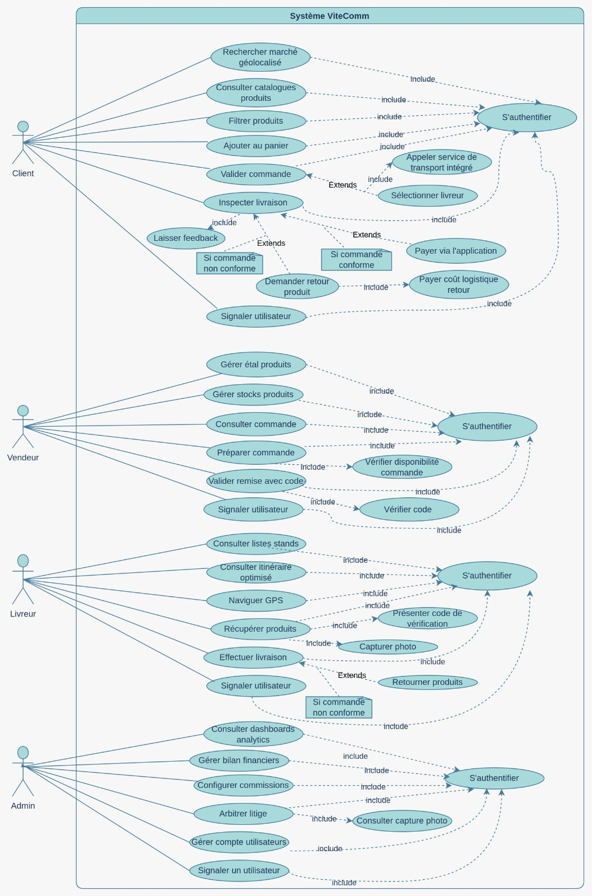
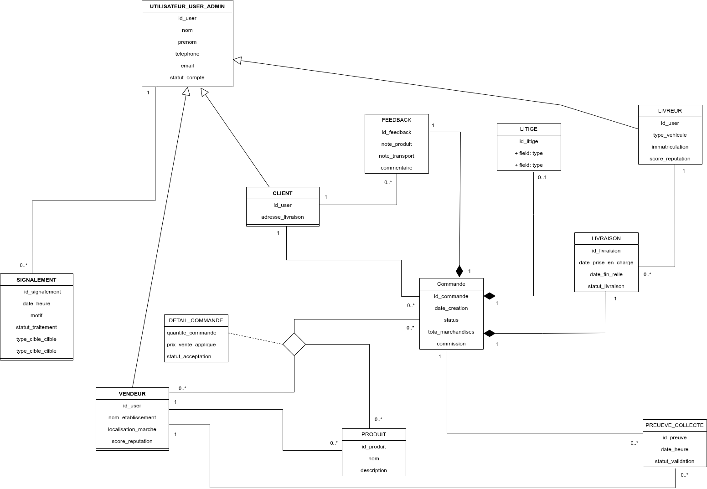

Architecture Merise & UML
1. Règles de Gestion (RG) Clarifiées & Complétées
Extraites et formalisées à partir du cahier des charges et des contraintes métier spécifiques.
| Code | Règle de Gestion |
|---|---|
| RG01 | Un client peut commander des articles provenant de plusieurs vendeurs au sein d'une même transaction. |
| RG02 | Un vendeur gère un catalogue de produits et un stock associé. |
| RG03 | Chaque article appartient exclusivement au catalogue d'un seul vendeur. Si deux vendeurs proposent un article identique, ils sont traités comme deux produits distincts avec des identifiants uniques (distinction architecturale de l'offre). |
| RG04 | Une commande est initialisée par un seul client. |
| RG05 | Une commande est prise en charge par un seul livreur (après affectation). |
| RG06 | La remise des articles par le vendeur au livreur est conditionnée par la validation d'un code de vérification unique. |
| RG07 | Double Preuve de Collecte (Livreur / Client) : Une preuve de collecte est obligatoirement réalisée par le livreur au niveau vendeur-livreur pour attester du retrait des marchandises. Au moment de la livraison, si le client n'est pas d'accord avec le/les produit(s) ou l'ensemble de la commande, il peut décider de réaliser sa propre preuve de collecte client (preuve photographique) pour initier un litige. |
| RG08 | Le paiement s'effectue à la livraison (COD). La plateforme prélève automatiquement une commission de 0,6 %. |
| RG09 | En cas de non-conformité, le client peut rejeter individuellement un ou plusieurs produits d'un catalogue, sans annuler l'ensemble de la commande. Il ne paie que les frais de retour pour les articles refusés ; les litiges sont arbitrés par l'administrateur. |
| RG16 | Les vendeurs dont les produits sont rejetés doivent les récupérer. Le système recalcule automatiquement le montant total de la transaction, la commission de la plateforme et le versement final au vendeur en tenant compte uniquement des articles acceptés. |
| RG10 | Les retours clients alimentent les scores de réputation des vendeurs et des livreurs uniquement. |
| RG11 | Accès restreint : L'administrateur ne peut ni accéder, ni modifier, ni consulter l'historique personnel du compte d'un client (conformité RGPD / confidentialité). |
| RG12 | Tableau de bord Admin : L'administrateur peut consulter l'ensemble des attributs de base de chaque utilisateur, les scores de réputation (vendeurs/livreurs), le catalogue complet d'un vendeur, ainsi que les statistiques agrégées des produits les plus achetés et les plus refusés. |
| RG13 | Gestion des comptes : L'administrateur dispose des droits de suppression ou de bannissement (suspension définitive) pour les comptes vendeurs et livreurs. |
| RG14 | Signalement universel : Tout utilisateur (client, vendeur, livreur) peut signaler tout autre utilisateur. Ces signalements sont centralisés et permettent à l'administrateur de sanctionner ou supprimer tout type de compte, y compris celui d'un client. |
| RG15 | Attribut Réputation : Le client ne possède pas de score de réputation. La notion de réputation est strictement réservée aux acteurs professionnels (vendeur, livreur). |
| RG17 | Spécialisation des Utilisateurs : Le système utilise une table parente
UTILISATEUR regroupant les attributs communs. Si un utilisateur n'appartient à aucune
spécialisation (Client, Vendeur, Livreur), il possède par défaut le rôle d'Administrateur (/admin). |
| RG18 | Atomicité du Détail : Le détail d'une commande (DETAIL_COMMANDE) n'est pas
une simple extension de la commande, mais une entité de liaison ternaire fusionnant les informations de la
COMMANDE, du PRODUIT et du VENDEUR. Cette structure permet la gestion
granulaire des rejets par produit et par vendeur au sein d'une même commande client. |
| RG19 | Disponibilité des Livreurs : La disponibilité d'un livreur est définie en prenant en compte sa distance par rapport au marché (localisation), son acceptation ou rejet d'une demande d'affectation (statut), et sa plage horaire de disponibilité (disponible de telle heure à telle heure). |
| RG20 | Création Postérieure du Feedback et du Litige : Le feedback et le litige n'existent pas lors du lancement d'une commande. Ils sont créés plus tard (le litige au moment de la livraison chez le client s'il y a désaccord, et le feedback après réception de la commande). |
| RG21 | Portée et Moment du Litige : Le litige n'est pas lié directement à la commande à sa
création. Il est initié lors de la livraison et peut concerner un produit spécifique, une liste de produits
ou la commande elle-même de façon générale (en y associant des photos). Les lignes concernées dans
DETAIL_COMMANDE sont directement rattachées au litige, évitant toute table intermédiaire
inutile. |
| RG22 | Panier Client : Le panier du client et les détails du panier sont créés pour mémoriser les articles sélectionnés par le client et les quantités associées avant la passation de la commande effective. |
| RG23 | Flexibilité du Feedback : Le feedback est optionnel. Le client peut évaluer le livreur
(ce qui affecte sa réputation) et/ou évaluer les vendeurs. Pour les vendeurs, le client a le choix de donner
un feedback sur l'ensemble de la commande (affectant tous les vendeurs concernés) ou des feedbacks distincts
sur des sous-ensembles/groupes de produits (n'affectant que les vendeurs de ces produits). Les lignes de
DETAIL_COMMANDE pointent vers leur feedback respectif. |
2. Identification des Entités & Dictionnaire des Attributs
Les objets métier identifiés, mis à jour pour intégrer les contraintes de gouvernance et de confidentialité.
| Entité | Identifiant | Attributs Non-Identifiants |
|---|---|---|
| UTILISATEUR | id_user |
nom, prenom, telephone, email, statut_compte, est_admin |
| CLIENT | #id_user |
adresse_livraison |
| VENDEUR | #id_user |
nom_etablissement, localisation_marche, score_reputation |
| LIVREUR | #id_user |
type_vehicule, immatriculation, score_reputation, est_disponible, distance_marche, heure_debut_dispo, heure_fin_dispo |
| PRODUIT | id_produit |
nom, description, prix_reference, stock_disponible |
| PANIER | id_panier |
date_creation, date_mise_a_jour, #id_user_client |
| DETAIL_PANIER | #id_panier, #id_produit |
quantite |
| COMMANDE | id_commande |
date_creation, statut, total_marchandises, frais_livraison, commission, code_verification |
| PREUVE_COLLECTE | id_preuve |
date_heure, url_photo (Preuve livreur au retrait), statut_validation, #id_commande, #id_user_vendeur |
| LITIGE | id_litige |
description, date_ouverture, statut, decision_admin, montant_rembourse, url_photos (Preuve client à la livraison), #id_livraison |
| LIVRAISON | id_livraison |
date_prise_en_charge, date_fin_reelle, statut_livraison, frais_retour_calcules |
| FEEDBACK | id_feedback |
note, commentaire, date_publication, type_feedback, #id_user_client, #id_livraison (si type=LIVREUR), #id_user_vendeur (si type=VENDEUR, optionnel) |
| SIGNALEMENT | id_signalement |
date_heure, motif, statut_traitement, type_cible_cible, #id_auteur, #id_cible |
| DETAIL_COMMANDE | #id_commande, #id_produit, #id_user_vendeur |
quantite_commandee, prix_vente_applique, statut_acceptation, #id_litige (FK nullable), #id_feedback (FK nullable) |
3. Couverture Minimale (DFED)
Application stricte de la méthode de normalisation : recherche des Dépendances Fonctionnelles Élémentaires Directes.
3.1. DFED Simples (Source non composée → Entités)
id_user → nom, prenom, telephone, email, statut_compte, est_admin
id_user (CLIENT) → adresse_livraison
id_user (VENDEUR) → nom_etablissement, localisation_marche, score_reputation
id_user (LIVREUR) → type_vehicule, immatriculation, score_reputation, est_disponible, distance_marche, heure_debut_dispo, heure_fin_dispo
id_produit → nom, description, prix_reference, stock_disponible
id_panier → date_creation, date_mise_a_jour, #id_user_client
id_commande → date_creation, statut, total_marchandises, frais_livraison, commission, code_verification
id_preuve → date_heure, url_photo, statut_validation
id_litige → description, date_ouverture, statut, decision_admin, montant_rembourse, url_photos, #id_livraison
id_feedback → note, commentaire, date_publication, type_feedback
id_signalement → date_heure, motif, statut_traitement, type_cible_cible
id_livraison → date_prise_en_charge, date_fin_reelle, statut_livraison, frais_retour_calcules3.2. DFED à Source Composée (Sources multiples → Associations CIM)
(id_commande, id_produit, #id_user_vendeur) → quantite_commandee, prix_vente_applique, statut_acceptation, #id_litige, #id_feedback
(id_panier, id_produit) → quantite
(id_commande, #id_user_vendeur) → statut_collecte_vendeur
(id_commande, #id_user_client) → statut_livraison_client3.3. DFED entre Identifiants (Identifiant → Identifiant → Associations CIF)
id_commande → #id_user_client
id_panier → #id_user_client
id_livraison → #id_commande
id_livraison → #id_user_livreur
id_produit → #id_user_vendeur
id_litige → #id_livraison
id_feedback → #id_user_client
id_feedback → #id_livraison (si type_feedback = 'LIVREUR')
id_feedback → #id_user_vendeur (si type_feedback = 'VENDEUR', optionnel)
id_signalement → #id_auteur (CIF)
id_signalement → #id_cible (CIF polymorphe géré par type_cible_cible)3.4. Fusion des Dépendances Fonctionnelles (Couverture Minimale Totale)
Synthèse globale de toutes les dépendances permettant de valider la 3NF (Troisième Forme Normale) et de déduire le schéma relationnel.
id_user → nom, prenom, telephone, email, statut_compte, est_admin
id_user (CLIENT) → adresse_livraison
id_user (VENDEUR) → nom_etablissement, localisation_marche, score_reputation
id_user (LIVREUR) → type_vehicule, immatriculation, score_reputation, est_disponible, distance_marche, heure_debut_dispo, heure_fin_dispo
id_produit → nom, description, prix_reference, stock_disponible, #id_user_vendeur
id_panier → date_creation, date_mise_a_jour, #id_user_client
id_commande → date_creation, statut, total_marchandises, frais_livraison, commission, code_verification, #id_user_client
id_preuve → date_heure, url_photo, statut_validation, #id_commande, #id_user_vendeur
id_litige → description, date_ouverture, statut, decision_admin, montant_rembourse, url_photos, #id_livraison
id_feedback → note, commentaire, date_publication, type_feedback, #id_user_client, #id_livraison (si type=LIVREUR), #id_user_vendeur (si type=VENDEUR)
id_signalement → date_heure, motif, statut_traitement, type_cible_cible, #id_auteur, #id_cible
id_livraison → date_prise_en_charge, date_fin_reelle, statut_livraison, frais_retour_calcules, #id_commande, #id_user_livreur
(id_commande, id_produit, #id_user_vendeur) → quantite_commandee, prix_vente_applique, statut_acceptation, #id_litige, #id_feedback
(id_panier, id_produit) → quantite
(id_commande, #id_user_vendeur) → statut_collecte_vendeur
(id_commande, #id_user_client) → statut_livraison_client4. Modèle Logique des Données (MLD) - CORRIGÉ
- SIGNALEMENT : Ajout de
#id_ciblemanquant (RG14 : signalement polymorphe) - FEEDBACK : Ajout de
#id_user_vendeurnullable pour supporter l'évaluation des vendeurs (RG23) - DETAIL_COMMANDE : Précision que
#id_litigeet#id_feedbacksont des FK nullable (un détail peut exister sans litige/feedback) - DFED/MLD cohérence : Alignement des dépendances fonctionnelles avec les clés étrangères déclarées
UTILISATEUR ( id_user, nom, prenom, telephone, email, statut_compte, est_admin)
CLIENT ( #id_user, adresse_livraison)
VENDEUR ( #id_user, nom_etablissement, localisation_marche, score_reputation)
LIVREUR ( #id_user, type_vehicule, immatriculation, score_reputation, est_disponible, distance_marche, heure_debut_dispo, heure_fin_dispo)
PRODUIT ( id_produit, nom, description, prix_reference, stock_disponible, #id_user_vendeur)
PANIER ( id_panier, date_creation, date_mise_a_jour, #id_user_client)
DETAIL_PANIER ( #id_panier, #id_produit, quantite)
COMMANDE ( id_commande, date_creation, statut, total_marchandises, frais_livraison, commission, code_verification, #id_user_client)
LIVRAISON ( id_livraison, date_prise_en_charge, date_fin_reelle, statut_livraison, frais_retour_calcules, #id_commande, #id_user_livreur)
DETAIL_COMMANDE ( #id_commande, #id_produit, #id_user_vendeur, quantite_commandee, prix_vente_applique, statut_acceptation, #id_litige [FK nullable], #id_feedback [FK nullable])
PREUVE_COLLECTE ( id_preuve, date_heure, url_photo, statut_validation, #id_commande, #id_user_vendeur)
LITIGE ( id_litige, description, date_ouverture, statut, decision_admin, montant_rembourse, url_photos, #id_livraison)
FEEDBACK ( id_feedback, note, commentaire, date_publication, type_feedback, #id_user_client, #id_livraison [FK nullable si type=LIVREUR], #id_user_vendeur [FK nullable si type=VENDEUR])
SIGNALEMENT ( id_signalement, date_heure, motif, statut_traitement, type_cible_cible, #id_auteur, #id_cible)5. Conception Orientée Objet (UML)
Passage du modèle relationnel (Merise) au modèle conceptuel objet, conforme aux standards UML 2.x.
5.1. Diagramme de Cas d'Utilisation
Rôle : Recueillir, analyser et organiser les besoins fonctionnels en recensant les grandes fonctionnalités du système ViteComm.

Relations & Contraintes intégrées :
<<include>>pour les traitements obligatoires (ex: validation preuve photo).<<extend>>pour les conditions (ex: ouverture litige).- Accès Admin : Isolation stricte. L'acteur Administrateur interagit avec les cas "Gérer Comptes Pro", "Consulter Dashboard Analytics", etc.
5.2. Diagramme de Classes
Rôle : Présenter la structure interne du système et fournir une représentation abstraite des objets qui interagissent.

- Classe
Utilisateur: Table parente regroupant les attributs communs. L'absence de spécialisation (Client/Vendeur/Livreur) définit l'Administrateur. - Spécialisations : Héritage vers
Client,VendeuretLivreuravec leurs attributs spécifiques respectifs. - Classe
Signalement: Couvre la politique de modération avec relations vers auteur ET cible (RG14). - Classe
Feedback: Supporte l'évaluation du livreur OU du vendeur via attributtype_feedbacket FK conditionnelles (RG23). - Classe d'Association
Detail_Commande: Représente la relation ternaire entre Commande, Produit et Vendeur, portant les attributs de quantité et de prix spécifique. Les références à Litige/Feedback sont optionnelles.
5.3. Diagramme d'Activité
Rôle : Mettre l'accent sur les traitements et représenter graphiquement le comportement métier séquentiel.